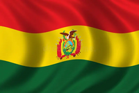

About Me
Hello! My name is Jose Manuel Copore Cutipa and I'm from Bermejo, Bolivia. I like to play soccer and videogames, and I love to meet new people and make new friends. I'm very excited to learn and grow in this course. I served as a missionary of The Church of Jesus Christ of Later Days Saints for two years (Jan. 2023 - Dic 2024) in Rancagua, Chile. I'm studying Software Development in BYU-I throght BYU-Pathway Worldwide. I learned english on my mission and also practicing in my home.

Bermejo, Bolivia
Bermejo is a city and municipality in Bolivia, located in the department of Tarija, on the border with Argentina. It is the southernmost city in the country. It is an area rich in hydrocarbons (oil and natural gas). It is located at 419 m above sea level, with a tropical climate, with an average of 22.18 °C and 1200 mm of rainfall concentrated in the rainy season (November-April).
